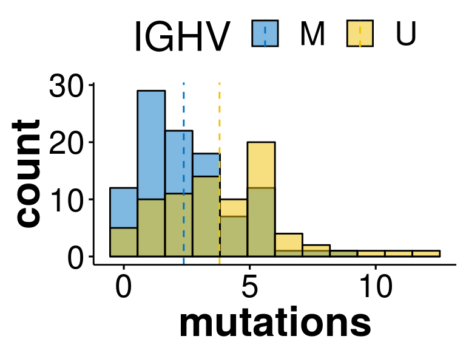

summary_variants
almut
14 November 2019
Last updated: 2021-03-22
Checks: 7 0
Knit directory: transcriptome_cll/
This reproducible R Markdown analysis was created with workflowr (version 1.4.0). The Checks tab describes the reproducibility checks that were applied when the results were created. The Past versions tab lists the development history.
Great! Since the R Markdown file has been committed to the Git repository, you know the exact version of the code that produced these results.
Great job! The global environment was empty. Objects defined in the global environment can affect the analysis in your R Markdown file in unknown ways. For reproduciblity it’s best to always run the code in an empty environment.
The command set.seed(20190511) was run prior to running the code in the R Markdown file. Setting a seed ensures that any results that rely on randomness, e.g. subsampling or permutations, are reproducible.
Great job! Recording the operating system, R version, and package versions is critical for reproducibility.
Nice! There were no cached chunks for this analysis, so you can be confident that you successfully produced the results during this run.
Great job! Using relative paths to the files within your workflowr project makes it easier to run your code on other machines.
Great! You are using Git for version control. Tracking code development and connecting the code version to the results is critical for reproducibility. The version displayed above was the version of the Git repository at the time these results were generated.
Note that you need to be careful to ensure that all relevant files for the analysis have been committed to Git prior to generating the results (you can use wflow_publish or wflow_git_commit). workflowr only checks the R Markdown file, but you know if there are other scripts or data files that it depends on. Below is the status of the Git repository when the results were generated:
Ignored files:
Ignored: .Rhistory
Ignored: .Rproj.user/
Ignored: output/figures/r_objects/BRAF/enrichment/
Untracked files:
Untracked: docs/figure/ATM.Rmd/
Untracked: docs/figure/BRAF.Rmd/
Untracked: docs/figure/Del13q14.Rmd/
Untracked: docs/figure/Del17p13.Rmd/
Untracked: docs/figure/Del8p12.Rmd/
Untracked: docs/figure/Gain8q24.Rmd/
Untracked: docs/figure/Med12.Rmd/
Untracked: docs/figure/Notch1.Rmd/
Untracked: docs/figure/SF3B1.Rmd/
Untracked: docs/figure/TP53.Rmd/
Untracked: docs/figure/del11q22.Rmd/
Untracked: docs/figure/summary_de_genes.Rmd/
Untracked: output/enrichment/NOTCH1_gsea.rds
Untracked: output/enrichment/del13q14_gsea.rds
Untracked: output/enrichment/del17p13_gsea.rds
Untracked: output/enrichment/gain8q24_gsea.rds
Untracked: output/figures/r_objects/BRAF/de_genes/ARNTL2.rds
Untracked: output/figures/r_objects/BRAF/de_genes/C9orf139.rds
Untracked: output/figures/r_objects/BRAF/de_genes/CD1A.rds
Untracked: output/figures/r_objects/BRAF/de_genes/CD1C.rds
Untracked: output/figures/r_objects/BRAF/de_genes/CNFN.rds
Untracked: output/figures/r_objects/BRAF/de_genes/IGHG1.rds
Untracked: output/figures/r_objects/BRAF/de_genes/IGHV3-49.rds
Untracked: output/figures/r_objects/BRAF/de_genes/INMT.rds
Untracked: output/figures/r_objects/BRAF/de_genes/KIF7.rds
Untracked: output/figures/r_objects/BRAF/de_genes/NECAB1.rds
Untracked: output/figures/r_objects/BRAF/de_genes/RAB25.rds
Untracked: output/figures/r_objects/BRAF/de_genes/SPOCD1.rds
Untracked: output/figures/r_objects/BRAF/de_genes/TFCP2L1.rds
Untracked: output/figures/r_objects/BRAF/de_genes/TICRR.rds
Untracked: output/figures/r_objects/BRAF/de_genes/TMPRSS4.rds
Untracked: output/figures/r_objects/Notch1/Notch1_enrichment_dn.rds
Untracked: output/figures/r_objects/Notch1/Notch1_enrichment_up.rds
Untracked: output/figures/r_objects/Notch1/de_genes/AAAS.rds
Untracked: output/figures/r_objects/Notch1/de_genes/ARHGEF37.rds
Untracked: output/figures/r_objects/Notch1/de_genes/ASH2LP1.rds
Untracked: output/figures/r_objects/Notch1/de_genes/CCDC114.rds
Untracked: output/figures/r_objects/Notch1/de_genes/CD1A.rds
Untracked: output/figures/r_objects/Notch1/de_genes/CELSR2.rds
Untracked: output/figures/r_objects/Notch1/de_genes/CNFN.rds
Untracked: output/figures/r_objects/Notch1/de_genes/CR1.rds
Untracked: output/figures/r_objects/Notch1/de_genes/DNAH2.rds
Untracked: output/figures/r_objects/Notch1/de_genes/FOXP2.rds
Untracked: output/figures/r_objects/Notch1/de_genes/IGHV1-3.rds
Untracked: output/figures/r_objects/Notch1/de_genes/IGLV1-47.rds
Untracked: output/figures/r_objects/Notch1/de_genes/IGLV2-23.rds
Untracked: output/figures/r_objects/Notch1/de_genes/IGLV3-10.rds
Untracked: output/figures/r_objects/Notch1/de_genes/IGLV4-69.rds
Untracked: output/figures/r_objects/Notch1/de_genes/IGLV5-37.rds
Untracked: output/figures/r_objects/Notch1/de_genes/MOB3B.rds
Untracked: output/figures/r_objects/Notch1/de_genes/OCA2.rds
Untracked: output/figures/r_objects/Notch1/de_genes/POU6F2.rds
Untracked: output/figures/r_objects/Notch1/de_genes/SERPINE2.rds
Untracked: output/figures/r_objects/Notch1/de_genes/SPAG17.rds
Untracked: output/figures/r_objects/Notch1/de_genes/SPTBN5.rds
Untracked: output/figures/r_objects/Notch1/de_genes/TMPRSS4.rds
Untracked: output/figures/r_objects/atm/de_genes/CYP51A1-AS1.rds
Untracked: output/figures/r_objects/atm/de_genes/IGHV1-18.rds
Untracked: output/figures/r_objects/atm/de_genes/IGLV3-27.rds
Untracked: output/figures/r_objects/atm/de_genes/NCAPGP1.rds
Untracked: output/figures/r_objects/atm/de_genes/PPM1E.rds
Untracked: output/figures/r_objects/atm/de_genes/PRSS21.rds
Untracked: output/figures/r_objects/atm/de_genes/PTPRQ.rds
Untracked: output/figures/r_objects/atm/de_genes/SNTB1.rds
Untracked: output/figures/r_objects/atm/de_genes/TM6SF1.rds
Untracked: output/figures/r_objects/del11q22/de_genes/CLDN3.rds
Untracked: output/figures/r_objects/del11q22/de_genes/IGHE.rds
Untracked: output/figures/r_objects/del11q22/de_genes/TFCP2L1.rds
Untracked: output/figures/r_objects/del13q14/de_genes/ARNTL2.rds
Untracked: output/figures/r_objects/del13q14/de_genes/CCDC151.rds
Untracked: output/figures/r_objects/del13q14/de_genes/CSGALNACT1.rds
Untracked: output/figures/r_objects/del13q14/de_genes/FBLN2.rds
Untracked: output/figures/r_objects/del13q14/de_genes/FRMD5.rds
Untracked: output/figures/r_objects/del13q14/de_genes/IGHV1-2.rds
Untracked: output/figures/r_objects/del13q14/de_genes/IGHV3-33.rds
Untracked: output/figures/r_objects/del13q14/de_genes/IGKV1-39.rds
Untracked: output/figures/r_objects/del13q14/de_genes/IGKV1-5.rds
Untracked: output/figures/r_objects/del13q14/de_genes/IGKV1-8.rds
Untracked: output/figures/r_objects/del13q14/de_genes/IGKV1D-39.rds
Untracked: output/figures/r_objects/del13q14/de_genes/INHBA.rds
Untracked: output/figures/r_objects/del13q14/de_genes/LAMP3.rds
Untracked: output/figures/r_objects/del13q14/de_genes/RAI14.rds
Untracked: output/figures/r_objects/del13q14/de_genes/RASSF8.rds
Untracked: output/figures/r_objects/del13q14/de_genes/RNF157.rds
Untracked: output/figures/r_objects/del13q14/de_genes/SEPT10.rds
Untracked: output/figures/r_objects/del13q14/de_genes/SLC19A1.rds
Untracked: output/figures/r_objects/del13q14/del13q14_enrichment_dn.rds
Untracked: output/figures/r_objects/del13q14/del13q14_enrichment_up.rds
Untracked: output/figures/r_objects/del17p13/de_genes/ARNTL2.rds
Untracked: output/figures/r_objects/del17p13/de_genes/CDH2.rds
Untracked: output/figures/r_objects/del17p13/de_genes/CEP55.rds
Untracked: output/figures/r_objects/del17p13/de_genes/COL6A1.rds
Untracked: output/figures/r_objects/del17p13/de_genes/FLT4.rds
Untracked: output/figures/r_objects/del17p13/de_genes/IGHV3-11.rds
Untracked: output/figures/r_objects/del17p13/de_genes/IGKV1-16.rds
Untracked: output/figures/r_objects/del17p13/de_genes/KIF7.rds
Untracked: output/figures/r_objects/del17p13/de_genes/MDM2.rds
Untracked: output/figures/r_objects/del17p13/de_genes/MEIS1.rds
Untracked: output/figures/r_objects/del17p13/de_genes/MIR4538.rds
Untracked: output/figures/r_objects/del17p13/de_genes/MRAP2.rds
Untracked: output/figures/r_objects/del17p13/de_genes/MYL12BP2.rds
Untracked: output/figures/r_objects/del17p13/de_genes/NPTX1.rds
Untracked: output/figures/r_objects/del17p13/de_genes/NRP2.rds
Untracked: output/figures/r_objects/del17p13/de_genes/PPM1H.rds
Untracked: output/figures/r_objects/del17p13/de_genes/RNF157.rds
Untracked: output/figures/r_objects/del17p13/de_genes/SLFNL1.rds
Untracked: output/figures/r_objects/del17p13/de_genes/SRP72P2.rds
Untracked: output/figures/r_objects/del17p13/de_genes/TFCP2L1.rds
Untracked: output/figures/r_objects/del17p13/de_genes/WDR87.rds
Untracked: output/figures/r_objects/del17p13/del17p13_enrichment_dn.rds
Untracked: output/figures/r_objects/del17p13/del17p13_enrichment_up.rds
Untracked: output/figures/r_objects/del8p12/de_genes/IGHJ2P.rds
Untracked: output/figures/r_objects/del8p12/de_genes/OVCH1-AS1.rds
Untracked: output/figures/r_objects/del8p12/de_genes/PLCB1.rds
Untracked: output/figures/r_objects/del8p12/de_genes/TM6SF1.rds
Untracked: output/figures/r_objects/epistasis/de_genes/CD38.rds
Untracked: output/figures/r_objects/gain8q24/de_genes/C1orf127.rds
Untracked: output/figures/r_objects/gain8q24/de_genes/CBS.rds
Untracked: output/figures/r_objects/gain8q24/de_genes/FAM160B2.rds
Untracked: output/figures/r_objects/gain8q24/de_genes/FAM85B.rds
Untracked: output/figures/r_objects/gain8q24/de_genes/IGLV1-51.rds
Untracked: output/figures/r_objects/gain8q24/de_genes/MTERF3.rds
Untracked: output/figures/r_objects/gain8q24/de_genes/RPL23AP53.rds
Untracked: output/figures/r_objects/gain8q24/de_genes/TM6SF1.rds
Untracked: output/figures/r_objects/gain8q24/de_genes/TMEM242.rds
Untracked: output/figures/r_objects/gain8q24/de_genes/ZNF662.rds
Untracked: output/figures/r_objects/gain8q24/gain8q24_enrichment_dn.rds
Untracked: output/figures/r_objects/gain8q24/gain8q24_enrichment_up.rds
Untracked: output/figures/r_objects/med12/de_genes/C10orf105.rds
Untracked: output/figures/r_objects/med12/de_genes/COL1A1.rds
Untracked: output/figures/r_objects/med12/de_genes/DUSP2.rds
Untracked: output/figures/r_objects/med12/de_genes/ENTPD4.rds
Untracked: output/figures/r_objects/med12/de_genes/ERRFI1.rds
Untracked: output/figures/r_objects/med12/de_genes/HSPA1A.rds
Untracked: output/figures/r_objects/med12/de_genes/HSPA1B.rds
Untracked: output/figures/r_objects/med12/de_genes/HSPA6.rds
Untracked: output/figures/r_objects/med12/de_genes/IGHJ2P.rds
Untracked: output/figures/r_objects/med12/de_genes/IGHV1-45.rds
Untracked: output/figures/r_objects/med12/de_genes/IGKV2-28.rds
Untracked: output/figures/r_objects/med12/de_genes/IGLV6-57.rds
Untracked: output/figures/r_objects/med12/de_genes/LTBP1.rds
Untracked: output/figures/r_objects/med12/de_genes/MTUS1.rds
Untracked: output/figures/r_objects/med12/de_genes/RASSF1.rds
Untracked: output/figures/r_objects/med12/de_genes/SNCAIP.rds
Untracked: output/figures/r_objects/med12/de_genes/TMPRSS11E.rds
Untracked: output/figures/r_objects/med12/de_genes/TRIM16L.rds
Unstaged changes:
Modified: analysis/ATM.Rmd
Modified: analysis/Del8p12.Rmd
Modified: analysis/Med12.Rmd
Modified: output/enrichment/del11q22.3_gsea.rds
Modified: output/figures/paper_fig/figure_epi.pdf
Modified: output/figures/paper_fig/figure_epi.svg
Modified: output/figures/paper_fig/generate_figures.Rmd
Modified: output/figures/r_objects/BRAF/BRAF_enrichment_dn.rds
Modified: output/figures/r_objects/BRAF/BRAF_enrichment_up.rds
Modified: output/figures/r_objects/BRAF/BRAF_heatmap.rds
Modified: output/figures/r_objects/BRAF/de_genes/ARHGEF37.rds
Modified: output/figures/r_objects/BRAF/de_genes/BIRC5.rds
Modified: output/figures/r_objects/BRAF/de_genes/CA1.rds
Modified: output/figures/r_objects/BRAF/de_genes/CELSR2.rds
Modified: output/figures/r_objects/BRAF/de_genes/DHRS9.rds
Modified: output/figures/r_objects/BRAF/de_genes/DSP.rds
Modified: output/figures/r_objects/BRAF/de_genes/F12.rds
Modified: output/figures/r_objects/BRAF/de_genes/FAM111B.rds
Modified: output/figures/r_objects/BRAF/de_genes/FAM184A.rds
Modified: output/figures/r_objects/BRAF/de_genes/FAM96AP2.rds
Modified: output/figures/r_objects/BRAF/de_genes/FLT4.rds
Modified: output/figures/r_objects/BRAF/de_genes/HCAR1.rds
Modified: output/figures/r_objects/BRAF/de_genes/HJURP.rds
Modified: output/figures/r_objects/BRAF/de_genes/IGHV3-11.rds
Modified: output/figures/r_objects/BRAF/de_genes/IGHV3-21.rds
Modified: output/figures/r_objects/BRAF/de_genes/IGHV3-23.rds
Modified: output/figures/r_objects/BRAF/de_genes/IGHV4-61.rds
Modified: output/figures/r_objects/BRAF/de_genes/IQGAP3.rds
Modified: output/figures/r_objects/BRAF/de_genes/KIF14.rds
Modified: output/figures/r_objects/BRAF/de_genes/KIF18B.rds
Modified: output/figures/r_objects/BRAF/de_genes/LINC00658.rds
Modified: output/figures/r_objects/BRAF/de_genes/LINC01203.rds
Modified: output/figures/r_objects/BRAF/de_genes/LINC01358.rds
Modified: output/figures/r_objects/BRAF/de_genes/MELK.rds
Modified: output/figures/r_objects/BRAF/de_genes/NRP2.rds
Modified: output/figures/r_objects/BRAF/de_genes/OR2B6.rds
Modified: output/figures/r_objects/BRAF/de_genes/PKMYT1.rds
Modified: output/figures/r_objects/BRAF/de_genes/PLIN5.rds
Modified: output/figures/r_objects/BRAF/de_genes/PPP1R14C.rds
Modified: output/figures/r_objects/BRAF/de_genes/PPP1R3C.rds
Modified: output/figures/r_objects/BRAF/de_genes/PTPRB.rds
Modified: output/figures/r_objects/BRAF/de_genes/RNF157.rds
Modified: output/figures/r_objects/BRAF/de_genes/RPSAP69.rds
Modified: output/figures/r_objects/BRAF/de_genes/SAMD12.rds
Modified: output/figures/r_objects/BRAF/de_genes/SDC3.rds
Modified: output/figures/r_objects/BRAF/de_genes/SEPT3.rds
Modified: output/figures/r_objects/BRAF/de_genes/SERPINE2.rds
Modified: output/figures/r_objects/BRAF/de_genes/SH3RF1.rds
Modified: output/figures/r_objects/BRAF/de_genes/SLC38A11.rds
Modified: output/figures/r_objects/BRAF/de_genes/SPRY4.rds
Modified: output/figures/r_objects/BRAF/de_genes/TFEC.rds
Modified: output/figures/r_objects/BRAF/de_genes/TMEM151B.rds
Modified: output/figures/r_objects/BRAF/de_genes/TMPRSS3.rds
Modified: output/figures/r_objects/BRAF/de_genes/TSHZ2.rds
Modified: output/figures/r_objects/BRAF/de_genes/ZFHX4.rds
Modified: output/figures/r_objects/BRAF/de_genes/ZNF503-AS1.rds
Modified: output/figures/r_objects/Notch1/de_genes/CLN8.rds
Modified: output/figures/r_objects/Notch1/de_genes/COL5A2.rds
Modified: output/figures/r_objects/Notch1/de_genes/GJB7.rds
Modified: output/figures/r_objects/Notch1/de_genes/IGLC6.rds
Modified: output/figures/r_objects/Notch1/de_genes/IGLV7-46.rds
Modified: output/figures/r_objects/Notch1/de_genes/KLK4.rds
Modified: output/figures/r_objects/Notch1/de_genes/MSI2.rds
Modified: output/figures/r_objects/Notch1/de_genes/NOTCH4.rds
Modified: output/figures/r_objects/Notch1/de_genes/SEPT3.rds
Modified: output/figures/r_objects/Notch1/de_genes/SPACA9.rds
Modified: output/figures/r_objects/Notch1/notch1_heatmap.rds
Modified: output/figures/r_objects/SF3B1/enrich_dot2.rds
Modified: output/figures/r_objects/SF3B1/enrich_net_hm.rds
Modified: output/figures/r_objects/SF3B1/enrich_net_kegg.rds
Modified: output/figures/r_objects/TP53/enrich_dot2.rds
Modified: output/figures/r_objects/TP53/enrich_net_hm.rds
Modified: output/figures/r_objects/TP53/enrich_net_kegg.rds
Modified: output/figures/r_objects/atm/atm_heatmap.rds
Modified: output/figures/r_objects/atm/de_genes/AHRR.rds
Modified: output/figures/r_objects/atm/de_genes/MECOM.rds
Modified: output/figures/r_objects/atm/de_genes/P4HA2.rds
Modified: output/figures/r_objects/atm/de_genes/PLCB1.rds
Modified: output/figures/r_objects/atm/de_genes/RBFOX2.rds
Modified: output/figures/r_objects/atm/de_genes/RNASE1.rds
Modified: output/figures/r_objects/atm/de_genes/SAXO2.rds
Modified: output/figures/r_objects/atm/de_genes/TMC5.rds
Modified: output/figures/r_objects/atm/de_genes/WNK2.rds
Modified: output/figures/r_objects/del11q22/de_genes/ACAT1.rds
Modified: output/figures/r_objects/del11q22/de_genes/AIRE.rds
Modified: output/figures/r_objects/del11q22/de_genes/ALG9.rds
Modified: output/figures/r_objects/del11q22/de_genes/ALKBH8.rds
Modified: output/figures/r_objects/del11q22/de_genes/ATM.rds
Modified: output/figures/r_objects/del11q22/de_genes/C11orf57.rds
Modified: output/figures/r_objects/del11q22/de_genes/CUL5.rds
Modified: output/figures/r_objects/del11q22/de_genes/CWF19L2.rds
Modified: output/figures/r_objects/del11q22/de_genes/DDX10.rds
Modified: output/figures/r_objects/del11q22/de_genes/DPY19L2.rds
Modified: output/figures/r_objects/del11q22/de_genes/IGHV3-11.rds
Modified: output/figures/r_objects/del11q22/de_genes/IGHV4-34.rds
Modified: output/figures/r_objects/del11q22/de_genes/IGHV4-39.rds
Modified: output/figures/r_objects/del11q22/de_genes/KBTBD3.rds
Modified: output/figures/r_objects/del11q22/de_genes/NPAT.rds
Modified: output/figures/r_objects/del11q22/de_genes/NT5E.rds
Modified: output/figures/r_objects/del11q22/de_genes/PPP2R1B.rds
Modified: output/figures/r_objects/del11q22/de_genes/RBM7.rds
Modified: output/figures/r_objects/del11q22/de_genes/REXO2.rds
Modified: output/figures/r_objects/del11q22/de_genes/SIK2.rds
Modified: output/figures/r_objects/del11q22/de_genes/TEAD1.rds
Modified: output/figures/r_objects/del11q22/de_genes/TMPRSS5.rds
Modified: output/figures/r_objects/del11q22/de_genes/TTC12.rds
Modified: output/figures/r_objects/del11q22/de_genes/USP28.rds
Modified: output/figures/r_objects/del11q22/de_genes/ZW10.rds
Modified: output/figures/r_objects/del11q22/del11q22_enrichment_dn.rds
Modified: output/figures/r_objects/del11q22/del11q22_enrichment_up.rds
Modified: output/figures/r_objects/del11q22/del11q22_heatmap.rds
Modified: output/figures/r_objects/del13q14/de_genes/ANK3.rds
Modified: output/figures/r_objects/del13q14/de_genes/AXL.rds
Modified: output/figures/r_objects/del13q14/de_genes/C10orf10.rds
Modified: output/figures/r_objects/del13q14/de_genes/C1orf127.rds
Modified: output/figures/r_objects/del13q14/de_genes/C9orf139.rds
Modified: output/figures/r_objects/del13q14/de_genes/CD1A.rds
Modified: output/figures/r_objects/del13q14/de_genes/CDCP1.rds
Modified: output/figures/r_objects/del13q14/de_genes/CELSR2.rds
Modified: output/figures/r_objects/del13q14/de_genes/CLEC4A.rds
Modified: output/figures/r_objects/del13q14/de_genes/CNFN.rds
Modified: output/figures/r_objects/del13q14/de_genes/CTAGE9.rds
Modified: output/figures/r_objects/del13q14/de_genes/ENPP3.rds
Modified: output/figures/r_objects/del13q14/de_genes/F12.rds
Modified: output/figures/r_objects/del13q14/de_genes/IGHV1-24.rds
Modified: output/figures/r_objects/del13q14/de_genes/IGHV3-23.rds
Modified: output/figures/r_objects/del13q14/de_genes/IGHV3-49.rds
Modified: output/figures/r_objects/del13q14/de_genes/IGKV2-24.rds
Modified: output/figures/r_objects/del13q14/de_genes/IGKV4-1.rds
Modified: output/figures/r_objects/del13q14/de_genes/IGLV1-40.rds
Modified: output/figures/r_objects/del13q14/de_genes/IGLV3-10.rds
Modified: output/figures/r_objects/del13q14/de_genes/ILDR2.rds
Modified: output/figures/r_objects/del13q14/de_genes/ISL2.rds
Modified: output/figures/r_objects/del13q14/de_genes/ITM2B.rds
Modified: output/figures/r_objects/del13q14/de_genes/KCNRG.rds
Modified: output/figures/r_objects/del13q14/de_genes/KIAA1549.rds
Modified: output/figures/r_objects/del13q14/de_genes/KIF7.rds
Modified: output/figures/r_objects/del13q14/de_genes/LARGE1.rds
Modified: output/figures/r_objects/del13q14/de_genes/LINC00470.rds
Modified: output/figures/r_objects/del13q14/de_genes/LINC00861.rds
Modified: output/figures/r_objects/del13q14/de_genes/LINC02363.rds
Modified: output/figures/r_objects/del13q14/de_genes/MAF.rds
Modified: output/figures/r_objects/del13q14/de_genes/MIOX.rds
Modified: output/figures/r_objects/del13q14/de_genes/MOGAT2.rds
Modified: output/figures/r_objects/del13q14/de_genes/MTCO3P40.rds
Modified: output/figures/r_objects/del13q14/de_genes/MTUS1.rds
Modified: output/figures/r_objects/del13q14/de_genes/MYLK.rds
Modified: output/figures/r_objects/del13q14/de_genes/NT5E.rds
Modified: output/figures/r_objects/del13q14/de_genes/PALD1.rds
Modified: output/figures/r_objects/del13q14/de_genes/PERP.rds
Modified: output/figures/r_objects/del13q14/de_genes/PI16.rds
Modified: output/figures/r_objects/del13q14/de_genes/PLEKHG7.rds
Modified: output/figures/r_objects/del13q14/de_genes/RAMP1.rds
Modified: output/figures/r_objects/del13q14/de_genes/RGL3.rds
Modified: output/figures/r_objects/del13q14/de_genes/SCIN.rds
Modified: output/figures/r_objects/del13q14/de_genes/SDC3.rds
Modified: output/figures/r_objects/del13q14/de_genes/SERPINE2.rds
Modified: output/figures/r_objects/del13q14/de_genes/SLC1A6.rds
Modified: output/figures/r_objects/del13q14/de_genes/SMAD3.rds
Modified: output/figures/r_objects/del13q14/de_genes/SNTB1.rds
Modified: output/figures/r_objects/del13q14/de_genes/SOAT2.rds
Modified: output/figures/r_objects/del13q14/de_genes/TFCP2L1.rds
Modified: output/figures/r_objects/del13q14/de_genes/TM6SF1.rds
Modified: output/figures/r_objects/del13q14/de_genes/TMPRSS4.rds
Modified: output/figures/r_objects/del13q14/de_genes/TSPAN13.rds
Modified: output/figures/r_objects/del13q14/de_genes/UACA.rds
Modified: output/figures/r_objects/del13q14/de_genes/UBE2F.rds
Modified: output/figures/r_objects/del13q14/del13q14_heatmap.rds
Modified: output/figures/r_objects/del17p13/de_genes/ACAP1.rds
Modified: output/figures/r_objects/del17p13/de_genes/ANKRD36BP2.rds
Modified: output/figures/r_objects/del17p13/de_genes/BTBD18.rds
Modified: output/figures/r_objects/del17p13/de_genes/CA1.rds
Modified: output/figures/r_objects/del17p13/de_genes/CDHR1.rds
Modified: output/figures/r_objects/del17p13/de_genes/CPT1C.rds
Modified: output/figures/r_objects/del17p13/de_genes/CTC1.rds
Modified: output/figures/r_objects/del17p13/de_genes/CTNS.rds
Modified: output/figures/r_objects/del17p13/de_genes/DPH1.rds
Modified: output/figures/r_objects/del17p13/de_genes/DRC3.rds
Modified: output/figures/r_objects/del17p13/de_genes/DSE.rds
Modified: output/figures/r_objects/del17p13/de_genes/DVL2.rds
Modified: output/figures/r_objects/del17p13/de_genes/FOXA3.rds
Modified: output/figures/r_objects/del17p13/de_genes/FXR2.rds
Modified: output/figures/r_objects/del17p13/de_genes/GK3P.rds
Modified: output/figures/r_objects/del17p13/de_genes/GLOD4.rds
Modified: output/figures/r_objects/del17p13/de_genes/GPS2.rds
Modified: output/figures/r_objects/del17p13/de_genes/IGKV2-24.rds
Modified: output/figures/r_objects/del17p13/de_genes/IGKV2D-28.rds
Modified: output/figures/r_objects/del17p13/de_genes/IGLV9-49.rds
Modified: output/figures/r_objects/del17p13/de_genes/KIAA0753.rds
Modified: output/figures/r_objects/del17p13/de_genes/MAP2K4.rds
Modified: output/figures/r_objects/del17p13/de_genes/MELK.rds
Modified: output/figures/r_objects/del17p13/de_genes/MPDU1.rds
Modified: output/figures/r_objects/del17p13/de_genes/MT-RNR1.rds
Modified: output/figures/r_objects/del17p13/de_genes/MTMR11.rds
Modified: output/figures/r_objects/del17p13/de_genes/MYH3.rds
Modified: output/figures/r_objects/del17p13/de_genes/NEURL4.rds
Modified: output/figures/r_objects/del17p13/de_genes/NLRP1.rds
Modified: output/figures/r_objects/del17p13/de_genes/RABEP1.rds
Modified: output/figures/r_objects/del17p13/de_genes/RNF167.rds
Modified: output/figures/r_objects/del17p13/de_genes/SENP3.rds
Modified: output/figures/r_objects/del17p13/de_genes/SMG6.rds
Modified: output/figures/r_objects/del17p13/de_genes/SOX15.rds
Modified: output/figures/r_objects/del17p13/de_genes/TNK1.rds
Modified: output/figures/r_objects/del17p13/de_genes/TRPC5.rds
Modified: output/figures/r_objects/del17p13/de_genes/UPK1A.rds
Modified: output/figures/r_objects/del17p13/de_genes/VPS53.rds
Modified: output/figures/r_objects/del17p13/de_genes/WRAP53.rds
Modified: output/figures/r_objects/del17p13/de_genes/ZBTB4.rds
Modified: output/figures/r_objects/del17p13/de_genes/ZZEF1.rds
Modified: output/figures/r_objects/del17p13/del17p13_heatmap.rds
Modified: output/figures/r_objects/del8p12/de_genes/ADGRG7.rds
Modified: output/figures/r_objects/del8p12/de_genes/ALG1L13P.rds
Modified: output/figures/r_objects/del8p12/de_genes/C8orf58.rds
Modified: output/figures/r_objects/del8p12/de_genes/DDX43.rds
Modified: output/figures/r_objects/del8p12/de_genes/ELP3.rds
Modified: output/figures/r_objects/del8p12/de_genes/EPHX2.rds
Modified: output/figures/r_objects/del8p12/de_genes/ERICH1.rds
Modified: output/figures/r_objects/del8p12/de_genes/FAM160B2.rds
Modified: output/figures/r_objects/del8p12/de_genes/FBXO25.rds
Modified: output/figures/r_objects/del8p12/de_genes/GTF2E2.rds
Modified: output/figures/r_objects/del8p12/de_genes/HMBOX1.rds
Modified: output/figures/r_objects/del8p12/de_genes/IGKV1-5.rds
Modified: output/figures/r_objects/del8p12/de_genes/IGKV3-20.rds
Modified: output/figures/r_objects/del8p12/de_genes/INTS10.rds
Modified: output/figures/r_objects/del8p12/de_genes/INTS9.rds
Modified: output/figures/r_objects/del8p12/de_genes/KIF13B.rds
Modified: output/figures/r_objects/del8p12/de_genes/LGSN.rds
Modified: output/figures/r_objects/del8p12/de_genes/LINC01016.rds
Modified: output/figures/r_objects/del8p12/de_genes/MAPRE3.rds
Modified: output/figures/r_objects/del8p12/de_genes/MCPH1.rds
Modified: output/figures/r_objects/del8p12/de_genes/MEF2B.rds
Modified: output/figures/r_objects/del8p12/de_genes/MTCO3P12.rds
Modified: output/figures/r_objects/del8p12/de_genes/NEIL2.rds
Modified: output/figures/r_objects/del8p12/de_genes/OVCH1.rds
Modified: output/figures/r_objects/del8p12/de_genes/PNOC.rds
Modified: output/figures/r_objects/del8p12/de_genes/PPP3CC.rds
Modified: output/figures/r_objects/del8p12/de_genes/PRDM16.rds
Modified: output/figures/r_objects/del8p12/de_genes/PSPHP1.rds
Modified: output/figures/r_objects/del8p12/de_genes/PTCH1.rds
Modified: output/figures/r_objects/del8p12/de_genes/PTK2B.rds
Modified: output/figures/r_objects/del8p12/de_genes/PTP4A3.rds
Modified: output/figures/r_objects/del8p12/de_genes/PTPRQ.rds
Modified: output/figures/r_objects/del8p12/de_genes/R3HCC1.rds
Modified: output/figures/r_objects/del8p12/de_genes/REEP4.rds
Modified: output/figures/r_objects/del8p12/de_genes/SCUBE2.rds
Modified: output/figures/r_objects/del8p12/de_genes/SLC44A5.rds
Modified: output/figures/r_objects/del8p12/de_genes/SLC6A9.rds
Modified: output/figures/r_objects/del8p12/de_genes/SNTB1.rds
Modified: output/figures/r_objects/del8p12/de_genes/TRPM2-AS.rds
Modified: output/figures/r_objects/del8p12/de_genes/XPO7.rds
Modified: output/figures/r_objects/del8p12/del8p12_heatmap.rds
Modified: output/figures/r_objects/epistasis/de_genes/ABLIM2.rds
Modified: output/figures/r_objects/epistasis/de_genes/BCL2A1.rds
Modified: output/figures/r_objects/epistasis/de_genes/CAMK2N1.rds
Modified: output/figures/r_objects/epistasis/de_genes/CHAD.rds
Modified: output/figures/r_objects/epistasis/de_genes/CRIM1.rds
Modified: output/figures/r_objects/epistasis/de_genes/E2F2.rds
Modified: output/figures/r_objects/epistasis/de_genes/EBF1.rds
Modified: output/figures/r_objects/epistasis/de_genes/EBF4.rds
Modified: output/figures/r_objects/epistasis/de_genes/EML6.rds
Modified: output/figures/r_objects/epistasis/de_genes/ENPP3.rds
Modified: output/figures/r_objects/epistasis/de_genes/EPHB1.rds
Modified: output/figures/r_objects/epistasis/de_genes/EPHB6.rds
Modified: output/figures/r_objects/epistasis/de_genes/FAM212A.rds
Modified: output/figures/r_objects/epistasis/de_genes/FGD6.rds
Modified: output/figures/r_objects/epistasis/de_genes/FGF2.rds
Modified: output/figures/r_objects/epistasis/de_genes/GEN1.rds
Modified: output/figures/r_objects/epistasis/de_genes/GP5.rds
Modified: output/figures/r_objects/epistasis/de_genes/JAG1.rds
Modified: output/figures/r_objects/epistasis/de_genes/LEF1.rds
Modified: output/figures/r_objects/epistasis/de_genes/PPP1R14A.rds
Modified: output/figures/r_objects/epistasis/de_genes/RAI14.rds
Modified: output/figures/r_objects/epistasis/de_genes/SLC4A8.rds
Modified: output/figures/r_objects/epistasis/de_genes/SYBU.rds
Modified: output/figures/r_objects/epistasis/de_genes/TCTN1.rds
Modified: output/figures/r_objects/epistasis/de_genes/TIMELESS.rds
Modified: output/figures/r_objects/epistasis/de_genes/TMPRSS11E.rds
Modified: output/figures/r_objects/epistasis/enrich_dot2.rds
Modified: output/figures/r_objects/epistasis/enrich_dot_buffering.rds
Modified: output/figures/r_objects/epistasis/enrich_dot_hm.rds
Modified: output/figures/r_objects/epistasis/enrich_dot_inversion.rds
Modified: output/figures/r_objects/epistasis/enrich_dot_supression.rds
Modified: output/figures/r_objects/epistasis/enrich_dot_synergy.rds
Modified: output/figures/r_objects/epistasis/enrich_net_kegg.rds
Modified: output/figures/r_objects/epistasis/epistasis_heatmap.rds
Modified: output/figures/r_objects/epistasis/epistasis_scheme.rds
Modified: output/figures/r_objects/epistasis/epistasis_scheme_lolli.rds
Modified: output/figures/r_objects/gain8q24/de_genes/ADAMDEC1.rds
Modified: output/figures/r_objects/gain8q24/de_genes/ALG1L13P.rds
Modified: output/figures/r_objects/gain8q24/de_genes/C8orf33.rds
Modified: output/figures/r_objects/gain8q24/de_genes/C8orf76.rds
Modified: output/figures/r_objects/gain8q24/de_genes/CPQ.rds
Modified: output/figures/r_objects/gain8q24/de_genes/CTHRC1.rds
Modified: output/figures/r_objects/gain8q24/de_genes/CYHR1.rds
Modified: output/figures/r_objects/gain8q24/de_genes/E2F5.rds
Modified: output/figures/r_objects/gain8q24/de_genes/EBAG9.rds
Modified: output/figures/r_objects/gain8q24/de_genes/FAM49B.rds
Modified: output/figures/r_objects/gain8q24/de_genes/FAM86B3P.rds
Modified: output/figures/r_objects/gain8q24/de_genes/IGKV3-20.rds
Modified: output/figures/r_objects/gain8q24/de_genes/INTS9.rds
Modified: output/figures/r_objects/gain8q24/de_genes/MTBP.rds
Modified: output/figures/r_objects/gain8q24/de_genes/PABPC1.rds
Modified: output/figures/r_objects/gain8q24/de_genes/PHF20L1.rds
Modified: output/figures/r_objects/gain8q24/de_genes/PLCD3.rds
Modified: output/figures/r_objects/gain8q24/de_genes/POLR2K.rds
Modified: output/figures/r_objects/gain8q24/de_genes/POTEM.rds
Modified: output/figures/r_objects/gain8q24/de_genes/PTPRQ.rds
Modified: output/figures/r_objects/gain8q24/de_genes/RAD21.rds
Modified: output/figures/r_objects/gain8q24/de_genes/RRM2B.rds
Modified: output/figures/r_objects/gain8q24/de_genes/SLC44A5.rds
Modified: output/figures/r_objects/gain8q24/de_genes/SNTB1.rds
Modified: output/figures/r_objects/gain8q24/de_genes/TATDN1.rds
Modified: output/figures/r_objects/gain8q24/de_genes/TMEM55A.rds
Modified: output/figures/r_objects/gain8q24/de_genes/TSTA3.rds
Modified: output/figures/r_objects/gain8q24/de_genes/UST.rds
Modified: output/figures/r_objects/gain8q24/de_genes/UTP23.rds
Modified: output/figures/r_objects/gain8q24/de_genes/ZNF16.rds
Modified: output/figures/r_objects/gain8q24/de_genes/ZNF251.rds
Modified: output/figures/r_objects/gain8q24/de_genes/ZNF462.rds
Modified: output/figures/r_objects/gain8q24/de_genes/ZNF7.rds
Modified: output/figures/r_objects/gain8q24/de_genes/ZNF706.rds
Modified: output/figures/r_objects/gain8q24/de_genes/ZNF707.rds
Modified: output/figures/r_objects/gain8q24/gain8q24_heatmap.rds
Modified: output/figures/r_objects/med12/de_genes/ADGRG7.rds
Modified: output/figures/r_objects/med12/de_genes/CDH20.rds
Modified: output/figures/r_objects/med12/de_genes/CLCNKA.rds
Modified: output/figures/r_objects/med12/de_genes/CSPG5.rds
Modified: output/figures/r_objects/med12/de_genes/DCHS1.rds
Modified: output/figures/r_objects/med12/de_genes/DDX43.rds
Modified: output/figures/r_objects/med12/de_genes/FCRL4.rds
Modified: output/figures/r_objects/med12/de_genes/FXYD6.rds
Modified: output/figures/r_objects/med12/de_genes/IGLV1-40.rds
Modified: output/figures/r_objects/med12/de_genes/IL15.rds
Modified: output/figures/r_objects/med12/de_genes/MTA1.rds
Modified: output/figures/r_objects/med12/de_genes/MYO5C.rds
Modified: output/figures/r_objects/med12/de_genes/NRCAM.rds
Modified: output/figures/r_objects/med12/de_genes/TCTN1.rds
Modified: output/figures/r_objects/med12/med12_heatmap.rds
Modified: output/figures/r_objects/summary_de_genes_IGHV_tri12.rds
Modified: output/figures/r_objects/summary_de_genes_all.rds
Note that any generated files, e.g. HTML, png, CSS, etc., are not included in this status report because it is ok for generated content to have uncommitted changes.
These are the previous versions of the R Markdown and HTML files. If you’ve configured a remote Git repository (see ?wflow_git_remote), click on the hyperlinks in the table below to view them.
| File | Version | Author | Date | Message |
|---|---|---|---|---|
| html | 026e8e9 | aluetge | 2019-11-18 | Build site. |
| html | e10c2b9 | aluetge | 2019-11-15 | Build site. |
| Rmd | f97f475 | aluetge | 2019-11-15 | wflow_publish(“analysis/summary_variants.Rmd”) |
Summary Variants
Mutations in our dataset/Generate an overview of our data set - number of mutations/sample - number of cases/variant - co-occurence/corplot
load packages
suppressPackageStartupMessages({
library(DESeq2)
library(dplyr)
library(ggplot2)
library(tidyverse)
library(corrplot)
library(ggpubr)
library(reshape2)
library(here)
})load datasets
data_dir <- here("data")
output_dir <- here("output")
figure_dir <- here("output/figures")
#dds data set. gene expression data + patmetadata
load(paste0(data_dir, "/ddsrnaCLL_150218.RData"))
#load meta data including genotyping info
load(paste0(data_dir, "/patmeta_170324.RData"))
excluded_columns <- c("HIPO.ID","PID", "gender","project", "diagnosis", "date.of.diagnosis", "treatment", "date.of.first.treatment", "IGHV.status","Methylation_Cluster")
patMeta <- as.tibble(patMeta) %>% filter(Patient.ID %in% ddsCLL$PatID) %>% dplyr::select(-one_of(excluded_columns))Warning: `as.tibble()` is deprecated, use `as_tibble()` (but mind the new semantics).
This warning is displayed once per session.variants <- patMeta %>% dplyr::select(-Patient.ID) %>% dplyr::select(-Chromothripsis) %>%
mutate_if(is.factor, as.character) %>%
mutate_if(is.character, as.numeric) %>%
dplyr::select(colnames(.)[colSums(.,na.rm = TRUE) > 4]) %>%
colnames()
#variants <- c( "trisomy12", "del13q14", "del8p12", "gain8q24", "del11q22.3", "del17p13", "BRAF", "NOTCH1", "SF3B1","TP53", "ATM", "MED12", "IGHV")
var_add <- variants[!variants %in% names(colData(ddsCLL))]
rownames(patMeta) <- patMeta$Patient.IDWarning: Setting row names on a tibble is deprecated.patMeta <- patMeta[colData(ddsCLL)$PatID,]
cd <- cbind(colData(ddsCLL), patMeta[,var_add])
colData(ddsCLL) <- cd
pat_new <- as.tibble(colData(ddsCLL)) %>% select(c(variants, "IGHV"))Number of recurrecnt mutations/patient
N_mut <- patMeta %>% dplyr::select(-Patient.ID) %>% mutate_if(is.factor, as.character) %>% mutate_if(is.character, as.numeric) %>% mutate(mutations=rowSums(.,na.rm = TRUE))
N_mut$IGHV <- pat_new$IGHV
N_mut <- N_mut %>% filter(!is.na(IGHV))
p <- gghistogram(N_mut, x = "mutations",
add = "mean", bins = 12, fill = "IGHV",
palette = "jco")
#ggsave(file=paste0(figure_dir, "/hist_mutations.svg"), plot=p, width=4, height=3)
p <- p + theme(axis.title.x = element_text(face="bold", size=25), axis.text.x=element_text(size=20),
axis.title.y = element_text(face="bold", size=25), axis.text.y= element_text(size=20),
legend.title = element_text(size=25), legend.text=element_text(size=20))
p
| Version | Author | Date |
|---|---|---|
| e10c2b9 | aluetge | 2019-11-15 |
saveRDS(p, file = paste0(output_dir, "/figures/r_objects/summary_variant_patient.rds"))
mean(N_mut$mutations)[1] 3Variant frequency
#group by IGHV status
overview <- pat_new %>% filter(!is.na(IGHV)) %>% mutate_at(vars(-IGHV), as.character) %>% mutate_at(vars(-IGHV), as.numeric) %>% dplyr::group_by(IGHV) %>% dplyr::summarize_if(is.numeric, sum, na.rm =T)
#Add total numbers
Sum <- pat_new %>% dplyr::select(-IGHV) %>% mutate_if(is.factor, as.character) %>% mutate_if(is.character, as.numeric) %>% summarize_if(is.numeric, sum, na.rm =T)
order_desc <- Sum[,order(as.numeric(Sum[1,]))] %>% colnames() %>% rev()
#Add IGHV status
IGHV_status <- as_data_frame(pat_new$IGHV) %>% dplyr::summarize(M = sum(value %in% "M"), U = sum(value %in% "U"), Total = n() -1)Warning: `as_data_frame()` is deprecated, use `as_tibble()` (but mind the new semantics).
This warning is displayed once per session.Sum$IGHV <- "Total"
IGHV_status <- t(IGHV_status)
#Combine all
sum_tab <- rbind(overview,Sum)
sum_tab <- sum_tab[, c("IGHV",order_desc)]
sum_tab <- cbind(sum_tab, IGHV_status)
sum_melted <- melt(sum_tab)Using IGHV as id variables#plot
p <- ggplot(sum_melted, aes(x = variable, y = factor(IGHV, levels = c("Total", "M", "U")))) +
geom_tile(aes(fill = value)) +
geom_text(aes(label = round(value, 1)), size =8) + ylab("IGHV_status") +
scale_fill_gradient(low = "white", high = "tomato2") +
theme(axis.title.x = element_text(face="bold", size=30), axis.text.x=element_text(size=25, angle = 90)) +
theme(axis.title.y = element_text(face="bold", size=25), axis.text.y= element_text(size=20))
#pdf(file=paste0(figure_dir, "/overview_mutations.pdf"), width=15, height=5)
p
| Version | Author | Date |
|---|---|---|
| e10c2b9 | aluetge | 2019-11-15 |
#dev.off()
saveRDS(p, file = paste0(output_dir, "/figures/r_objects/summary_var_freq_IGHV.rds"))Variant co-occurence
variants <- c(variants, "IGHV")[!variants %in% c("gain14q32")]
#Chisquare p.adj matrix
my_chisquare <- function(variant_in){
print(variant_in)
pat_new_sorted <- pat_new %>% set_rownames(ddsCLL$PatID)
pat_new_sorted <- pat_new_sorted[patMeta$Patient.ID,]
patMeta$IGHV_mu <- pat_new_sorted$IGHV
patMeta <- patMeta %>% mutate("IGHV" = ifelse(IGHV_mu %in% "M", 1,0))
patMat <- as.matrix(patMeta)
rownames(patMat) <- patMeta$Patient.ID
variant1 <- patMat[, c("Patient.ID",variant_in)]
rownames(variant1) <- patMeta$Patient.ID
variant1 <- variant1[which(!is.na(variant1[,variant_in])),]
geneBack <- patMat[rownames(variant1), variants]
coRes <- apply(geneBack, 2, function(x) {
nonNA <- !is.na(x)
res <- chisq.test(variant1[,variant_in][nonNA], x[nonNA])
data.frame(p=res$p.value, stat = res$statistic[[1]], residu = ifelse(res$residuals[1] > 0, 1, -1))
}) %>% do.call(rbind,.)
coRes$p.adj <- p.adjust(coRes$p)
resultDat <- as.data.frame(-log10(coRes$p.adj) * coRes$residu)
rownames(resultDat) <- rownames(coRes)
colnames(resultDat) <- variant_in
resultDat[variant_in,] <- 0
resultDat
}
resChi <-lapply(variants, my_chisquare) %>% do.call(cbind,.)[1] "gain2p25.3"
[1] "del8p12"
[1] "gain8q24"
[1] "del11q22.3"
[1] "trisomy12"
[1] "del13q14"
[1] "del15q15.1"
[1] "del17p13"
[1] "BRAF"
[1] "KRAS"
[1] "NOTCH1"
[1] "SF3B1"
[1] "TP53"
[1] "ACTN2"
[1] "ATM"
[1] "EGR2"
[1] "KLHL6"
[1] "MED12"
[1] "MGA"
[1] "NFKBIE"
[1] "PCLO"
[1] "XPO1"
[1] "IGHV"resChiMat <- as.matrix(resChi)
resChiMat <- resChiMat[!rowSums(resChiMat) == 0, !colSums(resChiMat) == 0]
col <- colorRampPalette(rev(c("#BB4444", "#EE9988", "#FFFFFF", "#77AADD", "#4477AA")))(50)
#svg(file=paste0(figure_dir, "/corplot_chiquare.svg"), width=10, height=10)
corrplot(resChiMat, is.corr = FALSE, method="color", col = col,
type = "upper", order = "hclust", number.cex = 1.2,
addCoef.col = "black", # Add coefficient of correlation
tl.col = "black", tl.srt = 90, # Text label color and rotation
tl.cex=1.4,
cl.lim = c(-5, 8),
cl.cex = 1.0,
diag = FALSE,
title = "-log10(p.adjust) * cor_direction")
| Version | Author | Date |
|---|---|---|
| e10c2b9 | aluetge | 2019-11-15 |
#dev.off()
sessionInfo()R version 3.6.3 (2020-02-29)
Platform: x86_64-pc-linux-gnu (64-bit)
Running under: Ubuntu 16.04.7 LTS
Matrix products: default
BLAS: /usr/lib/libblas/libblas.so.3.6.0
LAPACK: /usr/lib/lapack/liblapack.so.3.6.0
locale:
[1] LC_CTYPE=de_DE.UTF-8 LC_NUMERIC=C
[3] LC_TIME=de_DE.UTF-8 LC_COLLATE=de_DE.UTF-8
[5] LC_MONETARY=de_DE.UTF-8 LC_MESSAGES=de_DE.UTF-8
[7] LC_PAPER=de_DE.UTF-8 LC_NAME=C
[9] LC_ADDRESS=C LC_TELEPHONE=C
[11] LC_MEASUREMENT=de_DE.UTF-8 LC_IDENTIFICATION=C
attached base packages:
[1] parallel stats4 stats graphics grDevices utils datasets
[8] methods base
other attached packages:
[1] here_0.1 reshape2_1.4.3
[3] ggpubr_0.2 magrittr_1.5
[5] corrplot_0.84 forcats_0.4.0
[7] stringr_1.4.0 purrr_0.3.2
[9] readr_1.3.1 tidyr_0.8.3
[11] tibble_2.1.3 tidyverse_1.2.1
[13] ggplot2_3.1.1 dplyr_0.8.1
[15] DESeq2_1.24.0 SummarizedExperiment_1.14.0
[17] DelayedArray_0.10.0 BiocParallel_1.18.0
[19] matrixStats_0.54.0 Biobase_2.44.0
[21] GenomicRanges_1.36.0 GenomeInfoDb_1.20.0
[23] IRanges_2.18.1 S4Vectors_0.22.0
[25] BiocGenerics_0.30.0
loaded via a namespace (and not attached):
[1] nlme_3.1-152 bitops_1.0-6 fs_1.3.1
[4] lubridate_1.7.4 bit64_0.9-7 RColorBrewer_1.1-2
[7] httr_1.4.0 ggsci_2.9 rprojroot_1.3-2
[10] tools_3.6.3 backports_1.1.4 R6_2.4.0
[13] rpart_4.1-15 Hmisc_4.2-0 DBI_1.0.0
[16] lazyeval_0.2.2 colorspace_1.4-1 nnet_7.3-15
[19] withr_2.1.2 tidyselect_0.2.5 gridExtra_2.3
[22] bit_1.1-14 compiler_3.6.3 git2r_0.25.2
[25] cli_1.1.0 rvest_0.3.4 htmlTable_1.13.1
[28] xml2_1.2.0 labeling_0.3 scales_1.0.0
[31] checkmate_1.9.3 genefilter_1.66.0 digest_0.6.19
[34] foreign_0.8-76 rmarkdown_1.13 XVector_0.24.0
[37] base64enc_0.1-3 pkgconfig_2.0.2 htmltools_0.3.6
[40] readxl_1.3.1 htmlwidgets_1.3 rlang_0.3.4
[43] rstudioapi_0.10 RSQLite_2.1.1 generics_0.0.2
[46] jsonlite_1.6 acepack_1.4.1 RCurl_1.95-4.12
[49] GenomeInfoDbData_1.2.1 Formula_1.2-3 Matrix_1.3-2
[52] Rcpp_1.0.1 munsell_0.5.0 stringi_1.4.3
[55] whisker_0.3-2 yaml_2.2.0 zlibbioc_1.30.0
[58] plyr_1.8.4 grid_3.6.3 blob_1.1.1
[61] crayon_1.3.4 lattice_0.20-38 haven_2.1.0
[64] splines_3.6.3 annotate_1.62.0 hms_0.4.2
[67] locfit_1.5-9.1 knitr_1.23 pillar_1.4.1
[70] geneplotter_1.62.0 XML_3.98-1.20 glue_1.3.1
[73] evaluate_0.14 latticeExtra_0.6-28 modelr_0.1.4
[76] data.table_1.12.2 cellranger_1.1.0 gtable_0.3.0
[79] assertthat_0.2.1 xfun_0.7 xtable_1.8-4
[82] broom_0.5.2 survival_2.44-1.1 AnnotationDbi_1.46.0
[85] memoise_1.1.0 workflowr_1.4.0 cluster_2.1.1